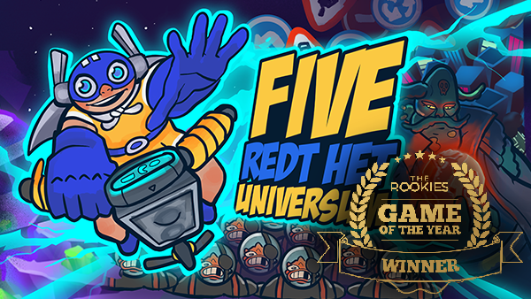
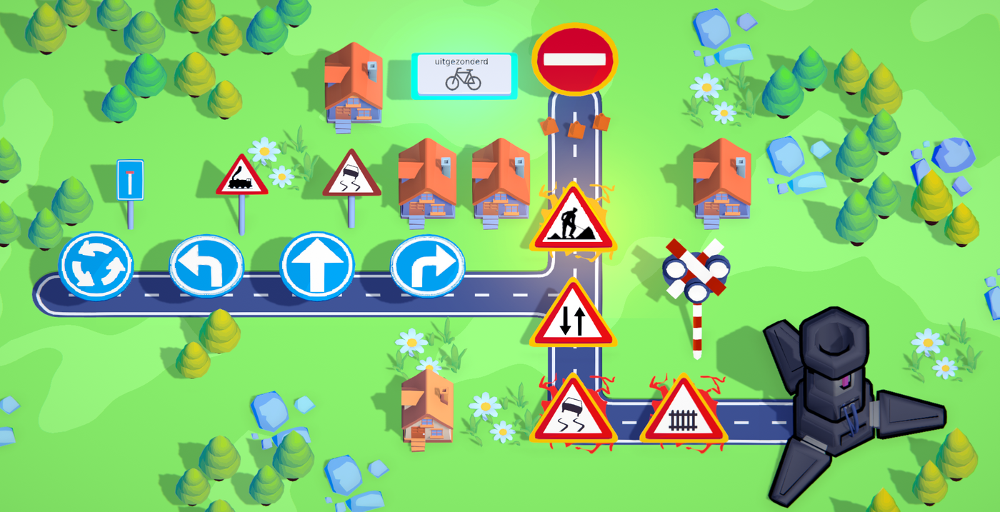
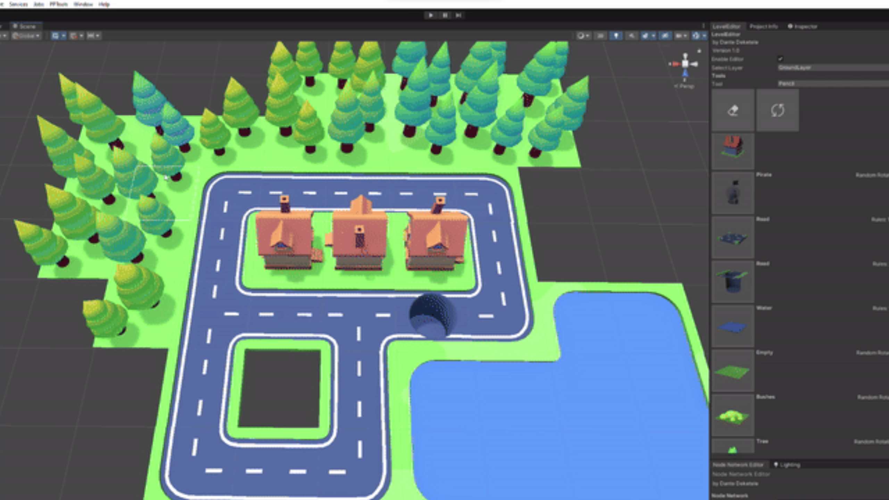

4 months

Five Saves The Universe Overview
Gameplay
"Five Saves The Universe" is an educational mobile game designed to teach kids how to navigate traffic. It was created for High-Five as part of a university course and was awarded the best student-made mobile game of the year by The Rookies.
The game involves solving puzzles by using road signs. The player has to help the superhero “Five” defeat the evil space-pirates invading earth. The pirates have created smogtaminationmachines, which are polluting the air with smog and only Five can stop them.
My Contribution
Story & Worldbuilding
I was in charge of writing the story and dialogue for the game. This was essential for giving the player context for the motives of the main hero. The client had an existing universe and storyline that I had to expand upon, which wasn’t easy at first. I tried to look for ways to incorporate the previously set up story and universe into our game. That’s how I came up with the idea of different planets which allowed us to have different stages of difficulty, with the final planet being the most difficult.
Dialogue
The dialogue was also important not only to give story context but also to teach players about new mechanics. Through our many playtest sessions, I learned that players don’t appreciate too much dialogue, especially not children. So I had to find ways to say all the information but in a short and concise way.
3D Assets
Our art lead managed the overall 3D look and style of the game. I contributed by creating a substantial number of 3D assets. We utilized a toon shader in Unity for shading, which streamlined our pipeline and greatly reduced the time needed for texturing.
Animations & Particles
I handled most of the animations and particle systems. In the animations, we kept the core principles of animation in mind like; squash and stretch, anticipation, easing, follow-through,.. For the particle systems, I utilized many rounded shapes and combined multiple simple particles to create dynamic effects.
Extra
Playtesting
Throughout the game's development, we organized multiple playtest sessions. Since our target audience was children aged 6-12, we visited elementary schools to gather feedback. We ensured diverse age groups to fine-tune the difficulty appropriately. Using Google Forms to record the data allowed us to visualize the feedback clearly and comprehensively.
Level editor
Our skilled lead engineer developed a level editor system that enabled us to quickly implement new levels. Coupled with a node system, this made the game's code highly optimized and easily expandable with new features.
